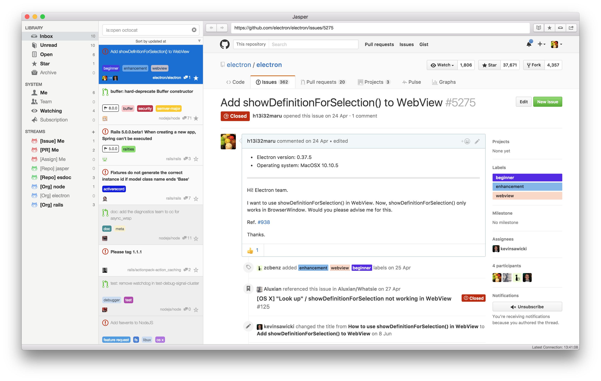
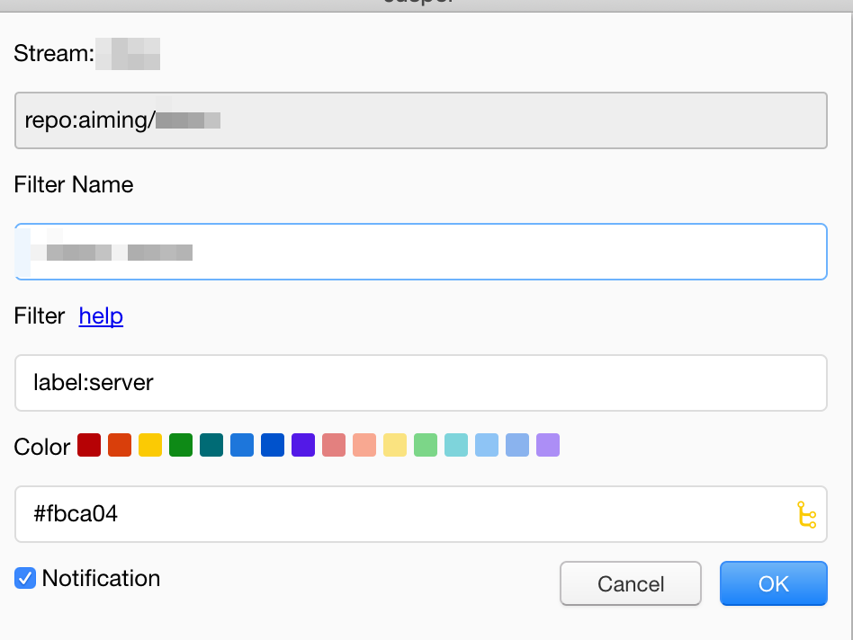

Jasperはいいぞ!
@vividmuimui
2019/01/16 社内LT
Jasper とは

Jasper とは
GitHubの通知を便利に見れるやつ！
以前は有料でしたが、2018/7に無料化されました。
便利なところ
デフォルトで結構便利
https://github.com/pulls https://github.com/issues https://github.com/notifications あたりのがデフォルトで用意されている。

便利なところ
閲覧したいIssueのStream(RSSフィードみたいなもの)を好きな条件で作成することができます
http://blog.h13i32maru.jp/entry/2016/06/08/090000
これが便利！

複数のリポジトリを1つのstreamにまとめることことができたり

特定のラベルが付いたものだけをまとめたりできる。
https://jasperapp.io/doc.html#stream
https://jasperapp.io/doc.html#filter
http://blog.h13i32maru.jp/entry/2016/06/21/201446
user, repo, label, keywordなど検索自由度はとても高いです
Jasper によってかわること
これまでは、slack通知を頼りに通知を追っていました。
- slack通知だとどうしても見落としてしまうケースがある
- 関わっているリポジトリが多くなると全部見るのは難しい
-
slack通知を自分好みにするのは難しい
- 権限とか調整とか
Jasperだと見たいものを自分好みにfliterできるのでとても良いです。
とくに、見なくて良いものを除くことができるのが圧倒的に便利！
終わり
https://qiita.com/kohashi/items/faa89fa3a38af93ee84d
ほかにも似たようなアプリはいっぱいあるみたいですし、Jasperも使い始めたばっかりなので、
これ便利だよ！とかこういう使い方あるよ！とかあったら教えてもらえると大変助かります